GSKY interacts with QGIS¶
This tutorial demonstrate how to load the GSKY WMS layer into QGIS. In this tutorial, you will learn
- how to add the layer by calling GSKY WMS server
- how to load the layer by calling GSKY WCS server
Introduction¶
QGIS is a user-friendly Open Source Geographic Information System (GIS) licensed under the GNU General Public License. QGIS is an official project of the Open Source Geospatial Foundation (OSGeo). It runs on Linux, Unix, Mac OSX, Windows and Android and supports numerous vector, raster, and database formats and functionalities.
0. Prerequisite¶
You need to install QGIS on your desktop, or you can run QGIS on NCI’s VDI. We demonstrate how to load GSKY layer into QGIS on VDI in this tutorial.
1. Launch QGIS¶
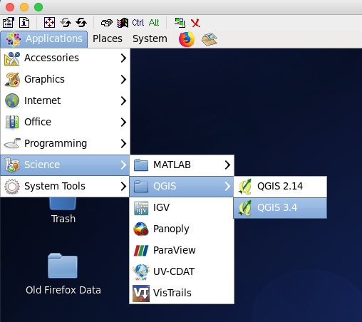2. Add GSKY WMS layer¶
Click “Layer | Add Layer | Add WMS/WMTS Layer”
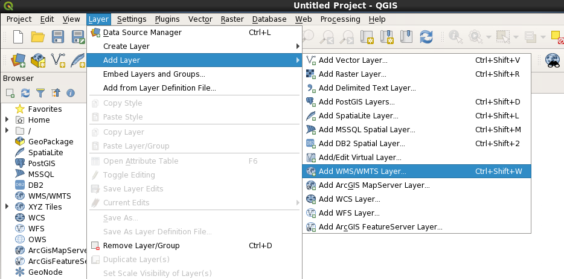In the “Data Source Manager”, click “New”
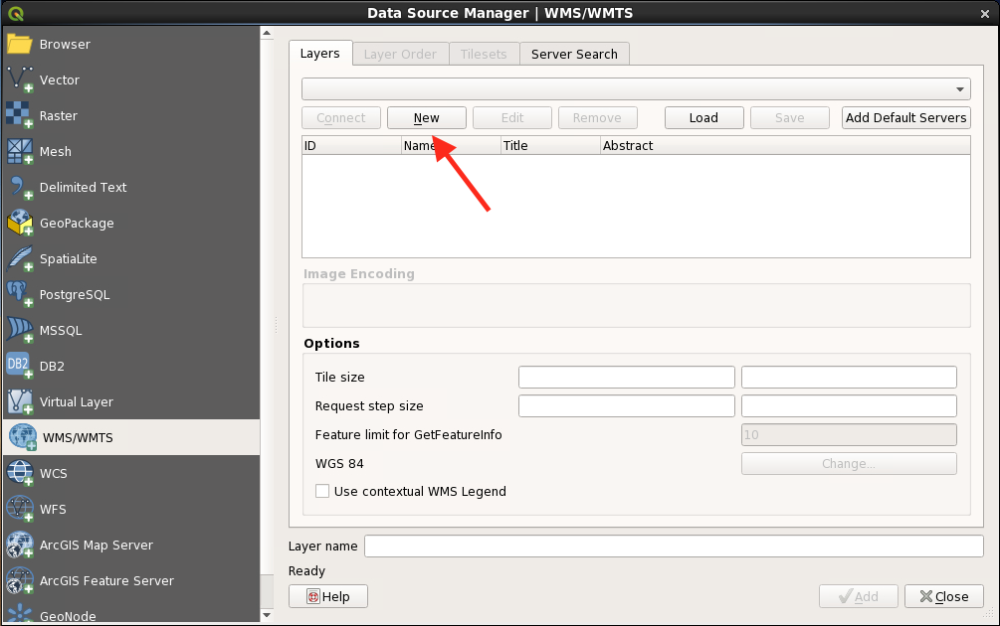Type “Name” and “URL” https://gsky.nci.org.au/ows/geoglam, click “OK”.
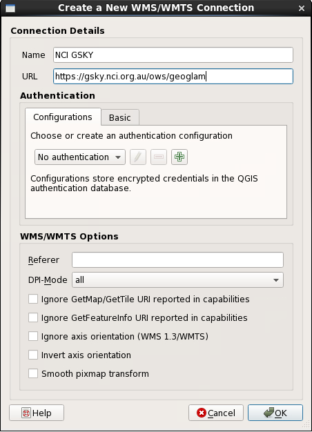In the “Data Source Manager”, click “Connect”
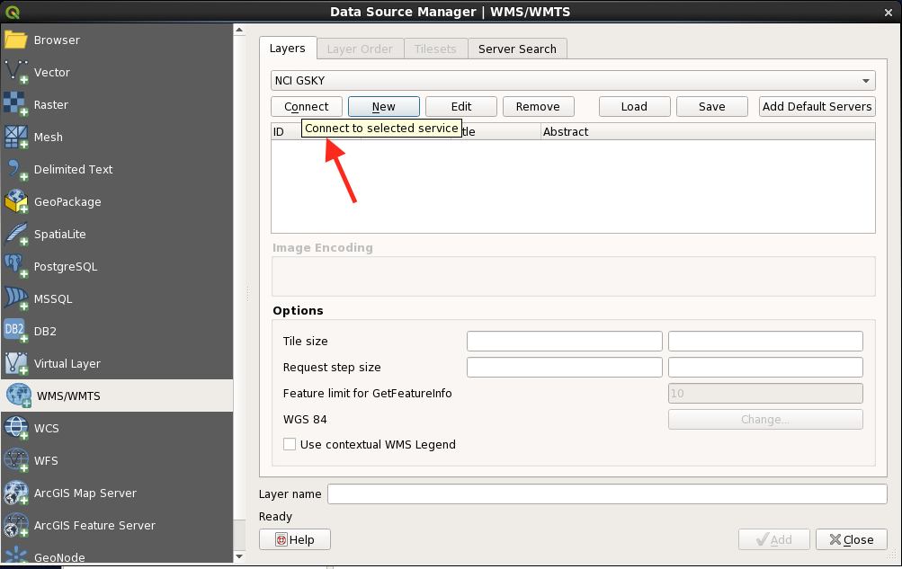A list of GSKY layers is presented in the box.
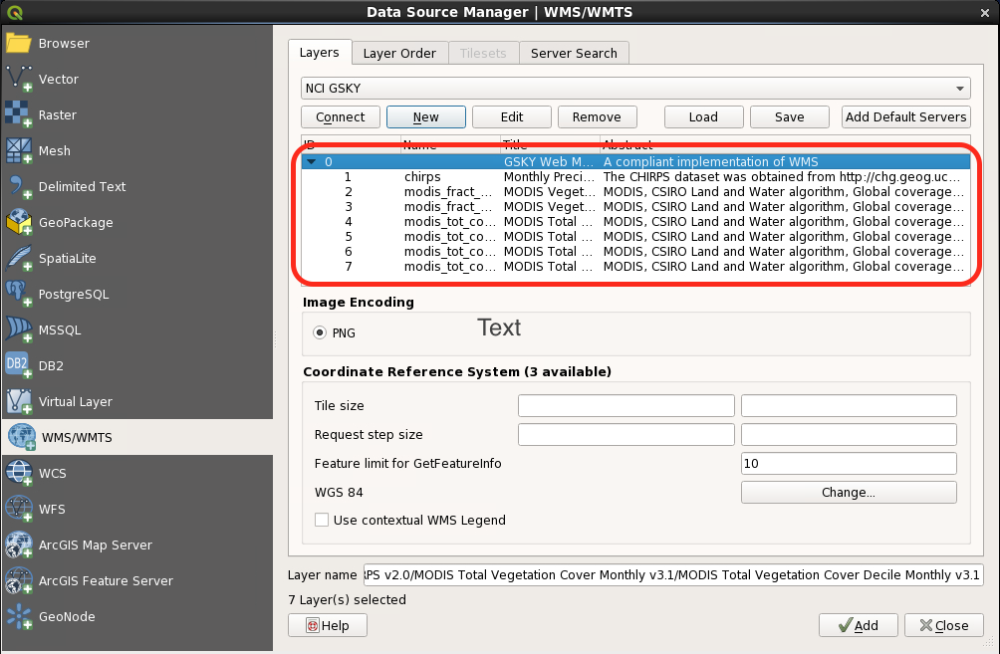Click “Add” and then “close” the window. Choose “WMS/WMTS | NCI GSKY | Layer name”.
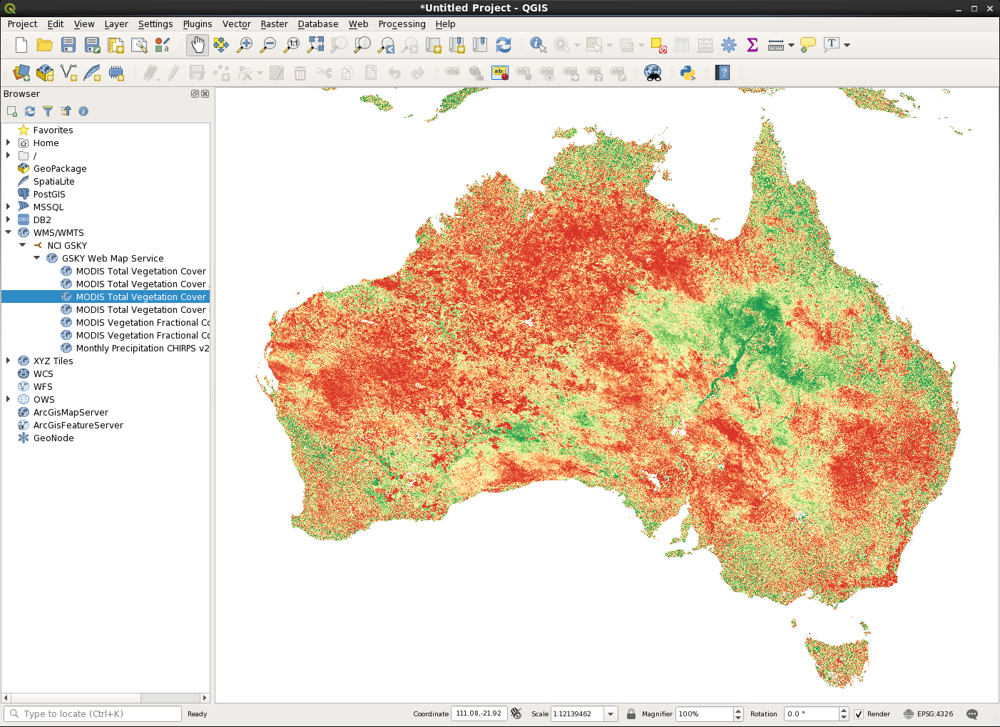You can save the layer by click “Save” button on the menu bar.
3. Add GSKY WCS layer¶
Click “Layer | Add Layer | Add WCS Layer”
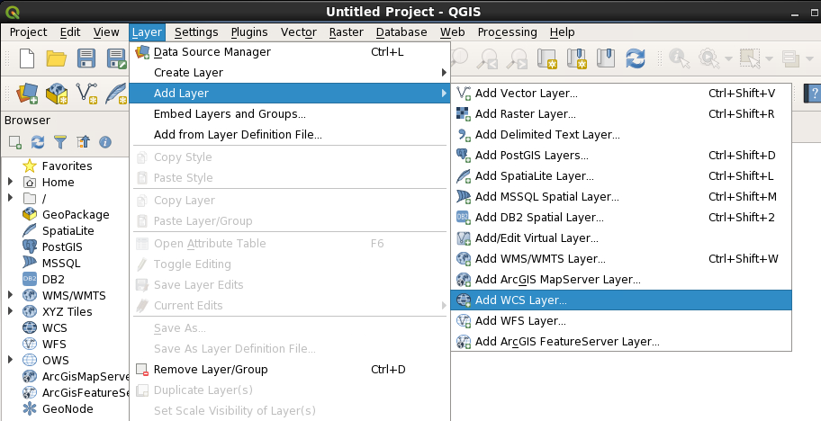In the “Data Source Manager”, click “New”
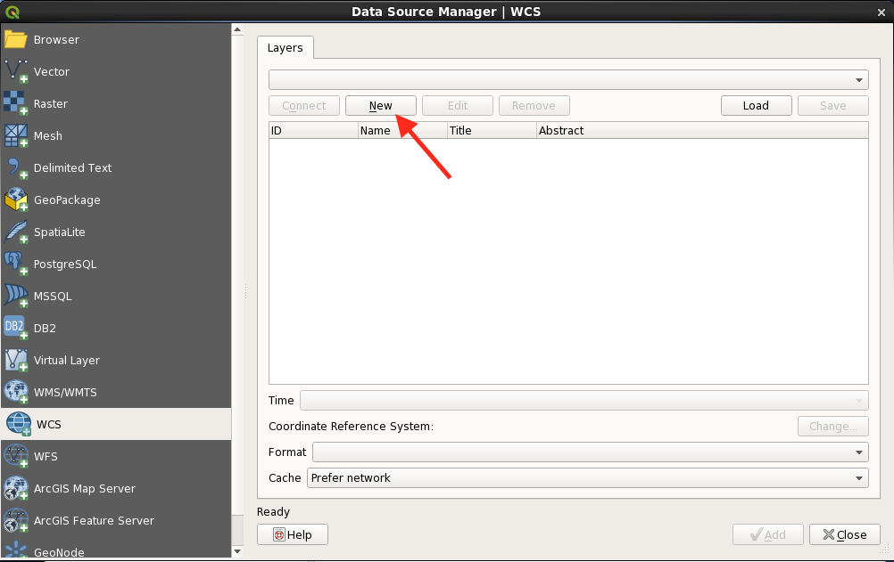Type “Name” GSKY WCS and “URL” https://gsky.nci.org.au/ows/geoglam, click “OK”.
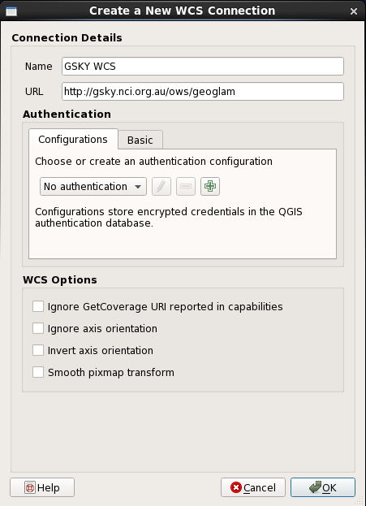In the “Data Source Manager”, click “Connect”
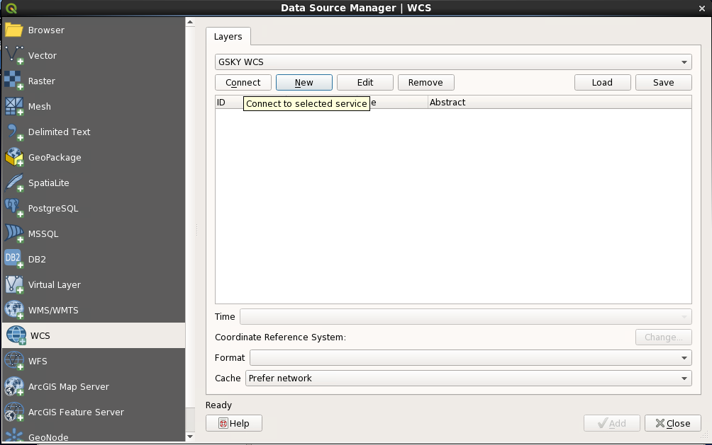A list of GSKY layers is presented in the box.
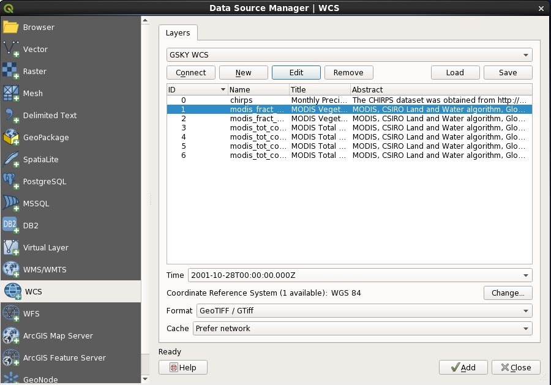Time, CRS, and Format can be selected from this window.
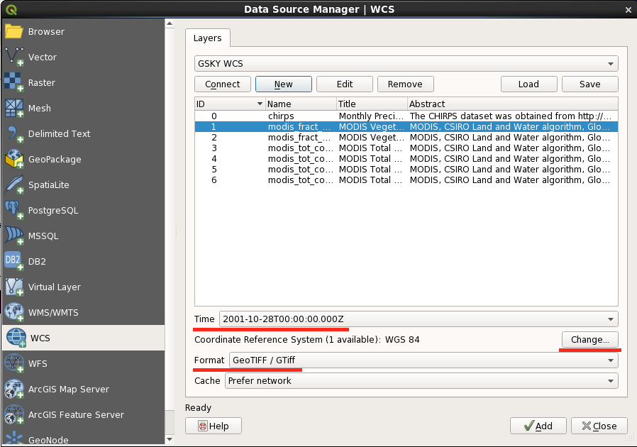Click “Time” and then scroll up and down to choose the time
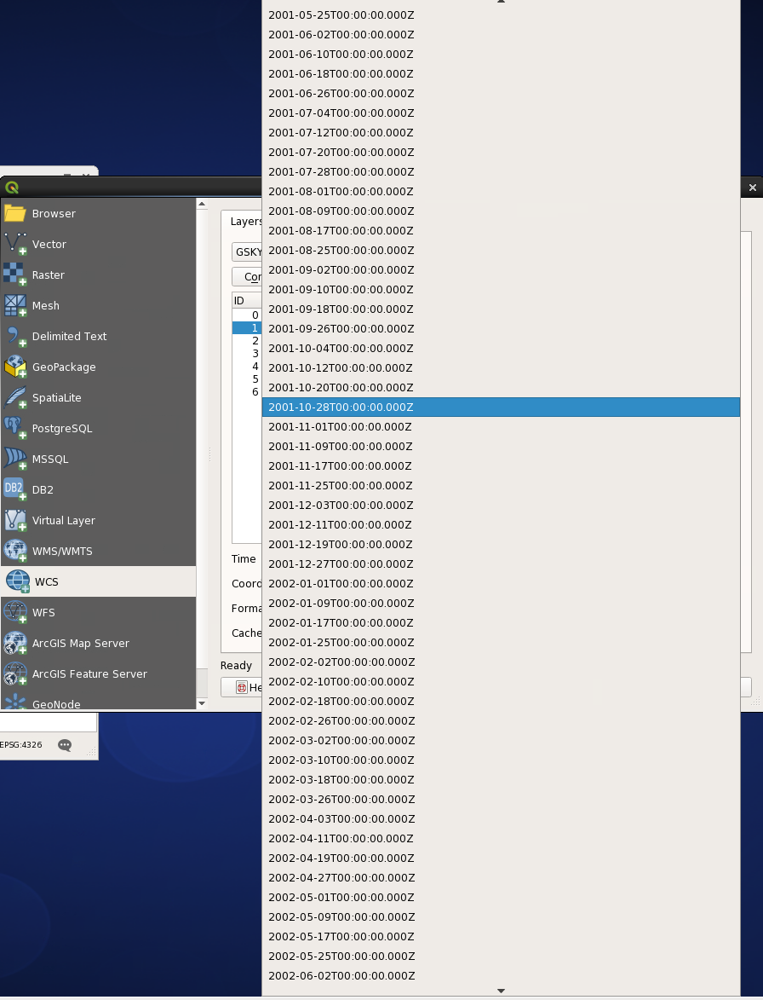Once you are happy with your choice, click “Add”.
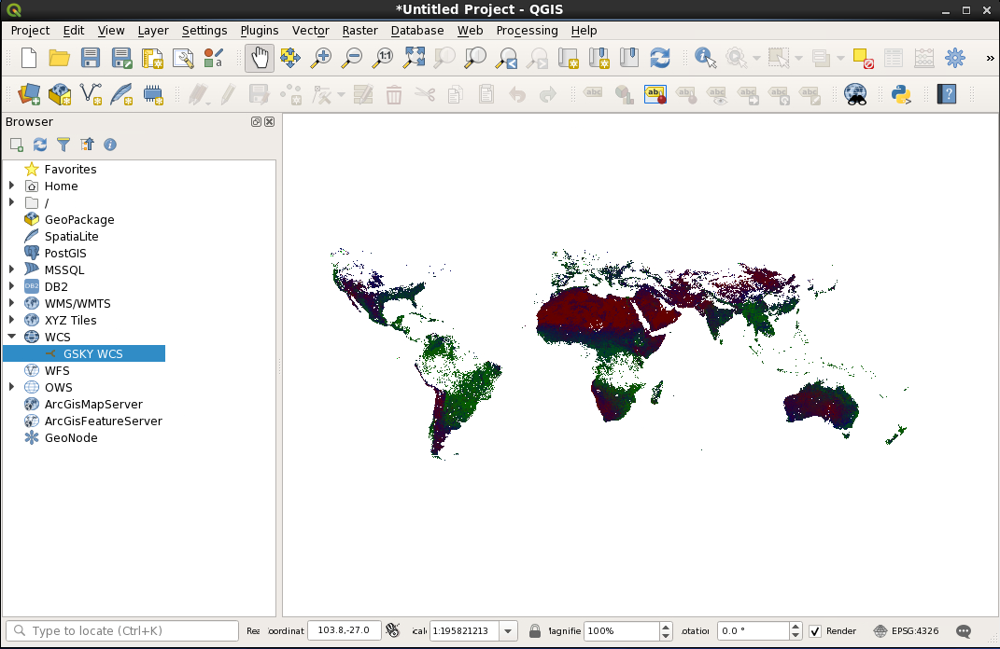Use zoom in button to select the area of your interests.
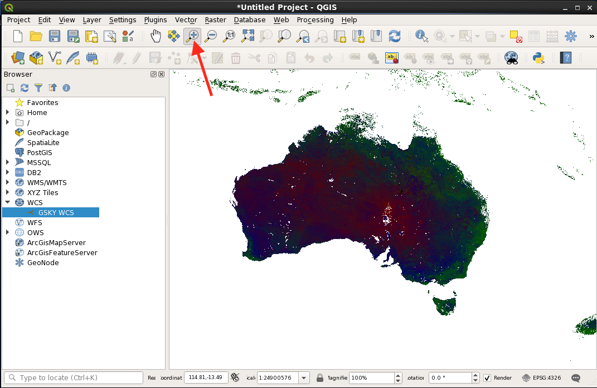You can save the layer by click “Layer | save as … ” button on the menu bar.
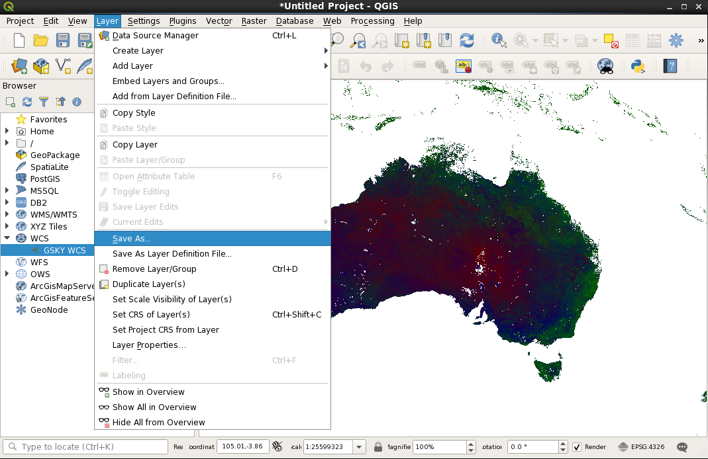You can define your output parameters.
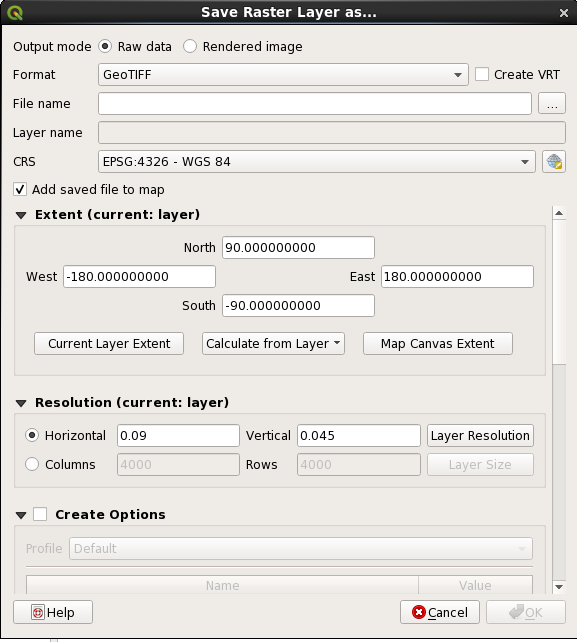There are a number of output formats can be selected from the list.
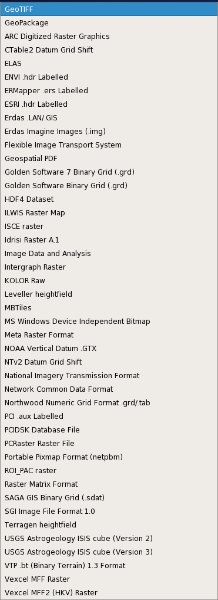